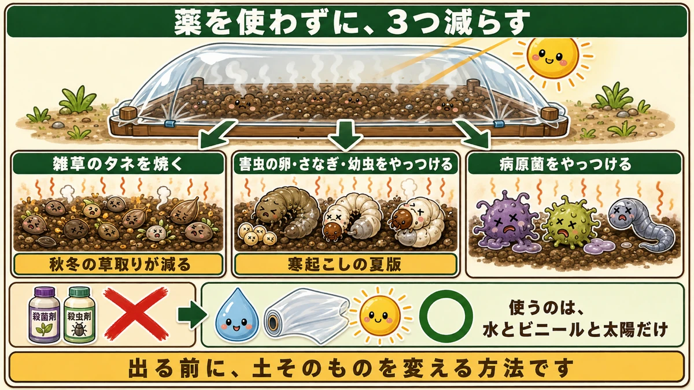
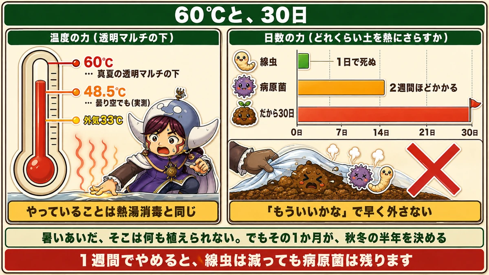
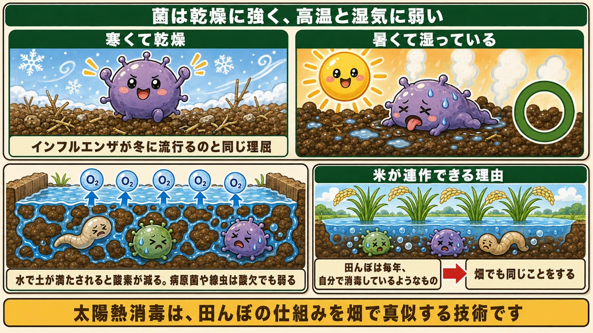
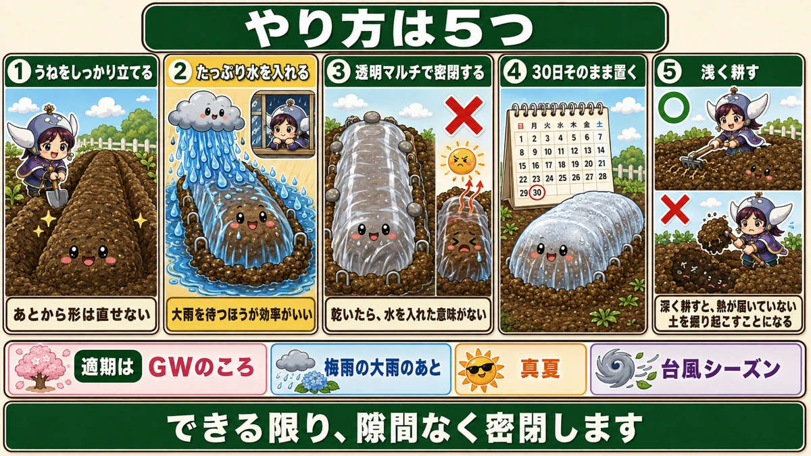

Soil pathogens survive drought but not steam ☀️ So you water the bed, then seal it

🗨️ "The same disease turns up in the same bed every year."
🗨️ "I'd rotate, but I have nowhere to rotate to."
🗨️ "I won't use chemicals — but I want to do something."
Hello, I'm Eiko. Eight years of growing vegetables organically and without pesticides, and a teaching licence in science.
The most important line first:
Soil organisms are tough against drying out, and weak against heat and damp.
So you don't bake the bed dry. You water it, seal it, and steam it ☺️
What solarisation is
Nothing but the summer sun
The whole method: soak the bed, seal it under clear plastic, and leave it in the height of summer. No chemicals of any kind.
It reduces three things

What this diagram says （図解の文字）
- Burns off weed seed — "less weeding in autumn and winter"
- Kills pest eggs, pupae and larvae — "the summer version of winter digging"
- Kills pathogens
- ✗ fungicide ／ ✗ insecticide ／ ○ "all you use is water, plastic and sun"
- "A way to change the soil itself, before anything appears."
1. Weed seed. The seed near the surface is killed by the heat. Much less weeding in the following season.
2. Pest eggs, pupae and larvae. Cutworms and chafer grubs are down there. Think of it as the summer equivalent of winter digging.
3. Pathogens — including root-knot nematodes, the ones that put galls on roots.
No fungicide, no insecticide
That's the real appeal. Water, clear plastic, sun.
Growing without pesticides, you meet a lot of situations where there's nothing to be done once a problem appears. This is a way of changing the soil before anything appears.
It reaches 140 °F under there

What this diagram says （図解の文字）
- The power of temperature (under clear plastic): 60 °C / 140 °F — "under clear plastic in high summer" ／ 48.5 °C / 119 °F — "even under cloud (measured)", with outside air at 33 °C / 91 °F
- "What you're doing is the same as sterilising with boiling water"
- The power of days: nematodes — "dead in a day" ／ pathogens — "take about two weeks" ／ "so, thirty days"
These are measured numbers
In high summer it gets to about 140 °F (60 °C) under clear plastic.
And the one that surprised me: even under cloud it reached 119 °F (48.5 °C) — hot enough that touching it would burn.
It is sterilisation by boiling water
140 °F is close to the temperature used to pasteurise food. What you are doing is the same thing. And it happens every day for a month.
Why clear plastic, not black
An important distinction:
- Black blocks light and heats itself. It warms soil moderately
- Clear lets light through and turns the space underneath into a greenhouse
Same principle as a greenhouse: let the light in, don't let the heat out.
There's a sign it's working: when steam forms and the plastic clouds up white underneath, you're there.
🔬 Pathogens are weak against heat and damp

What this diagram says （図解の文字）
- Cold and dry — "the same reason flu spreads in winter"
- ○ Hot and damp
- "When water fills the soil, oxygen drops. Pathogens and nematodes are weakened by the lack of oxygen too"
- "Why rice can be grown in the same paddy every year — a paddy field disinfects itself annually"
This is the interesting part
Why add water? Drying it out sounds more like sterilising. It's the other way round.
These organisms survive drought well. Heat plus damp is what kills them.
The same reason flu spreads in winter
Why is flu a winter illness? Because cold, dry air suits the virus — and it doesn't spread in a hot, humid summer.
Soil organisms behave identically. Dry and cool → they survive. Hot and wet → they weaken.
So: water it, seal it, steam it. It follows.
Cutting off the oxygen matters too
There's a second reason for the water. When soil fills with water the oxygen in it drops, and pathogens and nematodes are killed at lower temperatures when they're short of oxygen. You're attacking on two fronts.
And this is why rice doesn't need rotation
Here's a nice one. Rice is grown in the same paddy year after year without replant problems. Why?
Because the paddy is flooded. Standing water starves the soil of oxygen and knocks back the pathogens and nematodes. A paddy field disinfects itself every year.
So do the same in a vegetable bed: flood it, and add the sun's heat on top. Solarisation is a paddy field, borrowed.
The method, in five steps

What this diagram says （図解の文字）
- 1 Build the bed properly — "you can't reshape it afterwards"
- 2 Water it heavily — "waiting for heavy rain is more efficient"
- 3 Seal it under clear plastic — ✗ "if it dries out, the water was pointless"
- 4 Leave it thirty days (a calendar is shown)
- 5 Afterwards, cultivate shallowly only
1. Build the bed properly first
Shape it before you start — you can't fix it afterwards. A raised bed also drains better later.
2. Water it heavily
The most important step. Really soak it.
And the trick: let heavy rain do it. Filling a bed with a hose is hard work. Watch the forecast, get the bed ready before a downpour, and lay the plastic once it's fallen. The watering costs you nothing.
3. Seal it under clear plastic
Don't cut corners here. Seal it as completely as you can.
The reason: hot summer wind getting in through a gap dries the soil out fast — and once it's dry, the water was pointless. "Hot and damp" becomes "hot and dry", and that doesn't kill anything.
- Bury the edges in soil properly
- Put stones on
- Pin it
4. Leave it thirty days
You'll want to look. Don't. The reason is below.
5. Afterwards, cultivate shallowly
This one surprised me. Don't dig deeply when you've finished.
Dig deep and you bring up soil from below, which the heat never reached — mixing untreated soil back into the layer you just treated. You've undone it. Shallow, surface only.
Why thirty days, not seven
Because different organisms take different lengths of time:
- Nematodes die in about a day
- Pathogens take around two weeks
So stopping after a week reduces nematodes and leaves the pathogens. Two weeks is where the pathogens start to go. Thirty days gives you margin.
Don't pull it off early because it "must be done by now".
Yes — you can't plant there while it's hot. But that one month decides the following half-year.
When to do it
You want water and sun at the same time
There's more than one window. What you're looking for is heavy rain and strong sun close together:
- Late spring, as the heat comes on
- Straight after a spell of heavy rain (the water is free)
- The hottest weeks of summer (the highest temperatures)
- Late summer storms — another chance at free water
Count back from your autumn planting
The neatest way to place it: start thirty days before you want to plant your autumn crops.
Where I garden that means starting in midsummer, right after the rainy season, and lifting the plastic just as brassicas go in. Rain for the water, then the hottest sun, then straight into planting. It lines up.
One thing I'll be straight about
Calcium cyanamide
Look up solarisation and you'll find advice to add calcium cyanamide to the bed first. It does work:
- It adjusts soil pH
- It gives off heat as it breaks down, raising the soil temperature further
- It acts as a fertiliser
A genuinely multi-purpose material.
But if you're growing without pesticides
Being straight with you: in Japan, calcium cyanamide is registered as a pesticide. This site is written from a no-pesticide garden, so I don't use it. (Its classification differs by country — check how it's registered where you are.)
Water and sun alone are enough
And the important part: solarisation works without it.
The mechanism is heat, moisture and lack of oxygen. All three come from water, plastic and the sun. The 140 °F, and the 119 °F under cloud, were produced by the sun.
To sum up
- ✅ Soak, seal under clear plastic, leave in full summer sun — no chemicals
- ✅ It reduces weed seed, pest stages and pathogens including nematodes
- ✅ 140 °F under the plastic; 119 °F even under cloud
- ✅ Clear plastic, not black — you want a greenhouse, not a warm sheet
- ✅ Pathogens survive drought. Heat plus damp is what kills them
- ✅ Flooding also starves them of oxygen — the same reason rice needs no rotation
- ✅ Let heavy rain do the watering
- ✅ Any gap dries it out and wastes the whole thing
- ✅ Thirty days — nematodes go in a day, pathogens take two weeks
- ✅ Afterwards, cultivate shallowly or you mix untreated soil back in
- ✅ Calcium cyanamide is registered as a pesticide in Japan. It isn't needed
You don't have to do all of it. If you have one empty bed this summer, water it before the next downpour and put clear plastic over it. That's the whole technique 🌱
Thank you for reading!